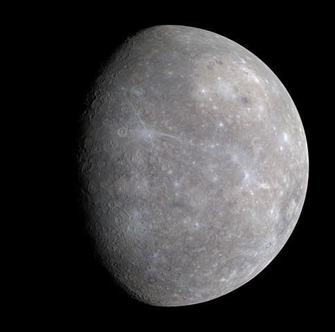
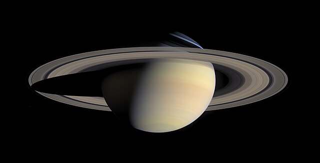

| Planeta | Símb. | Diámetro ecuatorial* | Diámetro ecuatorial | Masa | Radio Orbital | Período orbital | Período de rotación | Incl. | Sat. | Composición de la atmósfera | Imagen |
|---|---|---|---|---|---|---|---|---|---|---|---|
| Mercurio |
|
0.39 | 4878 | 0.06 | 0.24 | 58.24 | 7 | 0 | 0.156 | Trazas de hidrógeno, etc. |  |
| Saturno |
|
0.39 | 4878 | 0.06 | 0.24 | 58.24 | 7 | 0 | 0.156 | Trazas de hidrógeno, etc. |  |